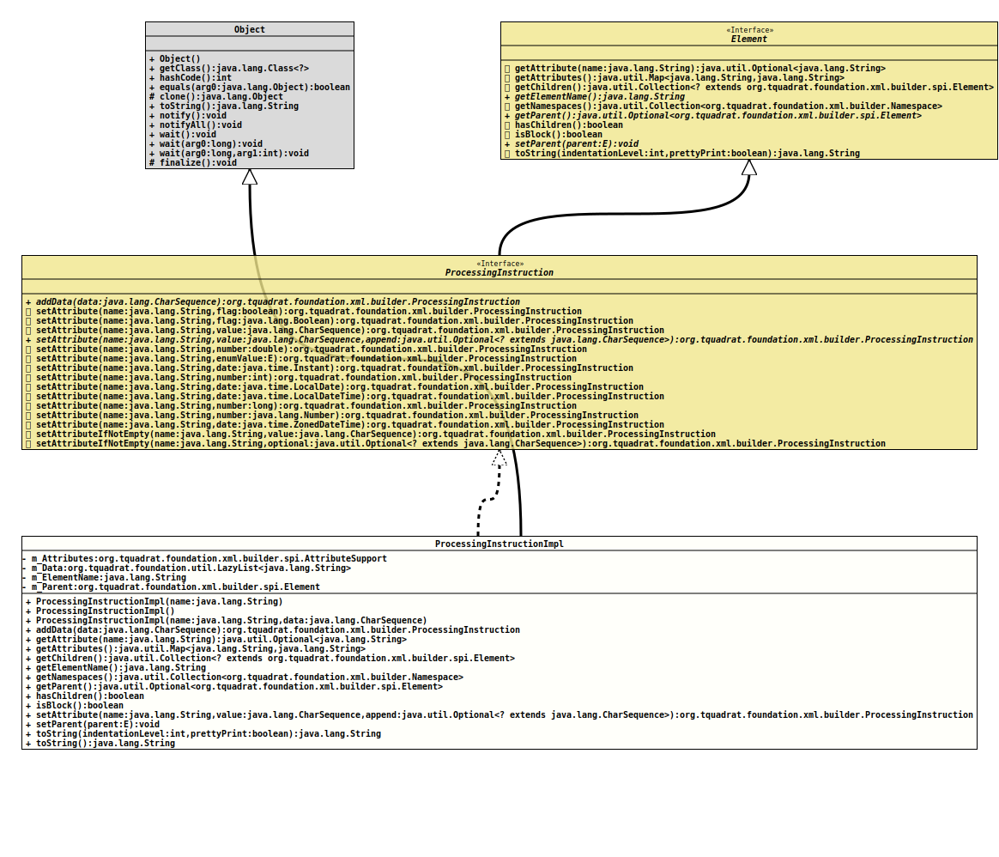

Module org.tquadrat.foundation.xml
Class ProcessingInstructionImpl
java.lang.Object
org.tquadrat.foundation.xml.builder.internal.ProcessingInstructionImpl
- All Implemented Interfaces:
ProcessingInstruction,Element
@ClassVersion(sourceVersion="$Id: ProcessingInstructionImpl.java 1101 2024-02-18 00:18:48Z tquadrat $")
@API(status=INTERNAL,
since="0.0.5")
public final class ProcessingInstructionImpl
extends Object
implements ProcessingInstruction
The implementation for the interface
ProcessingInstruction.- Author:
- Thomas Thrien (thomas.thrien@tquadrat.org)
- Version:
- $Id: ProcessingInstructionImpl.java 1101 2024-02-18 00:18:48Z tquadrat $
- Since:
- 0.0.5
- UML Diagram
-

UML Diagram for "org.tquadrat.foundation.xml.builder.internal.ProcessingInstructionImpl"
{kind=link}
-
Field Summary
FieldsModifier and TypeFieldDescriptionprivate final AttributeSupportThe attributes for the processing instruction.The data for the processing instruction.private final StringThe name for this processing instruction.private ElementThe parent for this processing instruction. -
Constructor Summary
ConstructorsConstructorDescriptionCreates theProcessingInstructioninstance for the XML header.Creates a newProcessingInstructioninstance.ProcessingInstructionImpl(String name, CharSequence data) Creates a newProcessingInstructioninstance. -
Method Summary
Modifier and TypeMethodDescriptionfinal ProcessingInstructionaddData(CharSequence data) Adds data to the processing instruction.getAttribute(String name) Returns the value for the attribute with the given name.Provides read access to the attributes.final Collection<? extends Element> Provides access to the children for this element; the returned collection is not modifiable.final StringReturns the name of the element.final Collection<Namespace> Provides access to the namespaces for this element; the returned collection is not modifiable.Returns the parent of this element.final booleanReturnstrueif the element has children,falseotherwise.final booleanisBlock()Returns the block flag.
This flag is used in the conversion of the element into a String; it indicates whether the element is 'inline' (like an HTML <span>) or 'block' (as an HTML <div>).final ProcessingInstructionsetAttribute(String name, CharSequence value, Optional<? extends CharSequence> append) Sets the attribute with the given name.final <E extends Element>
voidsetParent(E parent) Sets the parent for this element.final StringtoString()final StringtoString(int indentationLevel, boolean prettyPrint) Returns a String representation for this element instance.Methods inherited from class java.lang.Object
clone, equals, finalize, getClass, hashCode, notify, notifyAll, wait, wait, waitMethods inherited from interface org.tquadrat.foundation.xml.builder.ProcessingInstruction
setAttribute, setAttribute, setAttribute, setAttribute, setAttribute, setAttribute, setAttribute, setAttribute, setAttribute, setAttribute, setAttribute, setAttribute, setAttributeIfNotEmpty, setAttributeIfNotEmpty
-
Field Details
-
m_Attributes
The attributes for the processing instruction. -
m_Data
The data for the processing instruction. -
m_ElementName
The name for this processing instruction. -
m_Parent
The parent for this processing instruction.
-
-
Constructor Details
-
ProcessingInstructionImpl
Creates a newProcessingInstructioninstance.- Parameters:
name- The name for this processing instruction.
-
ProcessingInstructionImpl
public ProcessingInstructionImpl()Creates theProcessingInstructioninstance for the XML header. -
ProcessingInstructionImpl
Creates a newProcessingInstructioninstance.- Parameters:
name- The name for this processing instruction.data- The data for the processing instruction; can benull.
-
-
Method Details
-
addData
Adds data to the processing instruction.- Specified by:
addDatain interfaceProcessingInstruction- Parameters:
data- The data to add.- Returns:
- This instance.
-
getAttribute
Returns the value for the attribute with the given name.- Specified by:
getAttributein interfaceElement- Parameters:
name- The attribute name.- Returns:
- An instance of
Optionalthat holds the value for that attribute.
-
getAttributes
Provides read access to the attributes.- Specified by:
getAttributesin interfaceElement- Returns:
- A reference to the attributes.
-
getChildren
Provides access to the children for this element; the returned collection is not modifiable.- Specified by:
getChildrenin interfaceElement- Returns:
- A reference to the children of this element; if the element does not have children, an empty collection will be returned.
-
getElementName
Returns the name of the element.- Specified by:
getElementNamein interfaceElement- Returns:
- The name of the element.
-
getNamespaces
Provides access to the namespaces for this element; the returned collection is not modifiable.- Specified by:
getNamespacesin interfaceElement- Returns:
- A reference to the namespaces of this element; if the element does not have namespaces assigned, an empty collection will be returned.
-
getParent
Returns the parent of this element. -
hasChildren
Returnstrueif the element has children,falseotherwise.- Specified by:
hasChildrenin interfaceElement- Returns:
trueif the element has children.
-
isBlock
Returns the block flag.
This flag is used in the conversion of the element into a String; it indicates whether the element is 'inline' (like an HTML <span>) or 'block' (as an HTML <div>). This is important only for elements where whitespace is relevant, like for HTML elements, as pretty printing will add additional whitespace around inline elements that can become visible on parsing (for HTML: on the rendered page).
XML elements for example will be always block as there whitespace is not that important.
Obviously,trueindicates a block element, whilefalsestands for an inline element.
The default istrue. -
setAttribute
public final ProcessingInstruction setAttribute(String name, CharSequence value, Optional<? extends CharSequence> append) throws IllegalArgumentException Sets the attribute with the given name.
The given attribute name is validated using the method that is provided by
XMLBuilderUtils.getAttributeNameValidator().- Specified by:
setAttributein interfaceProcessingInstruction- Parameters:
name- The name of the attribute; the name is case-sensitive.value- The attribute's value; ifnullthe attribute will be removed.append- If not empty, the new value will be appended on an already existing one, and this sequence is used as the separator.- Returns:
- This instance.
- Throws:
IllegalArgumentException- An attribute with the given name is not valid for the element.
-
setParent
Sets the parent for this element. -
toString
Returns a String representation for this element instance. -
toString
-